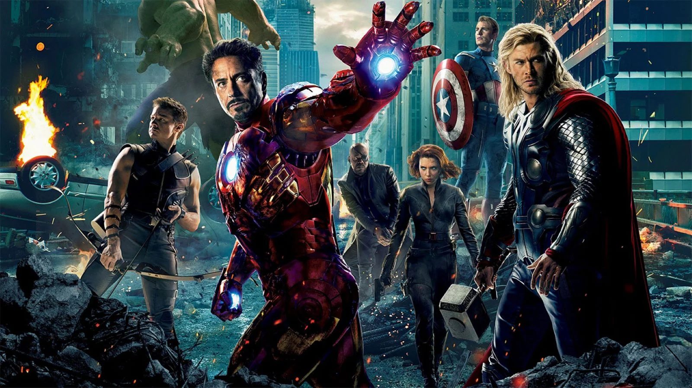
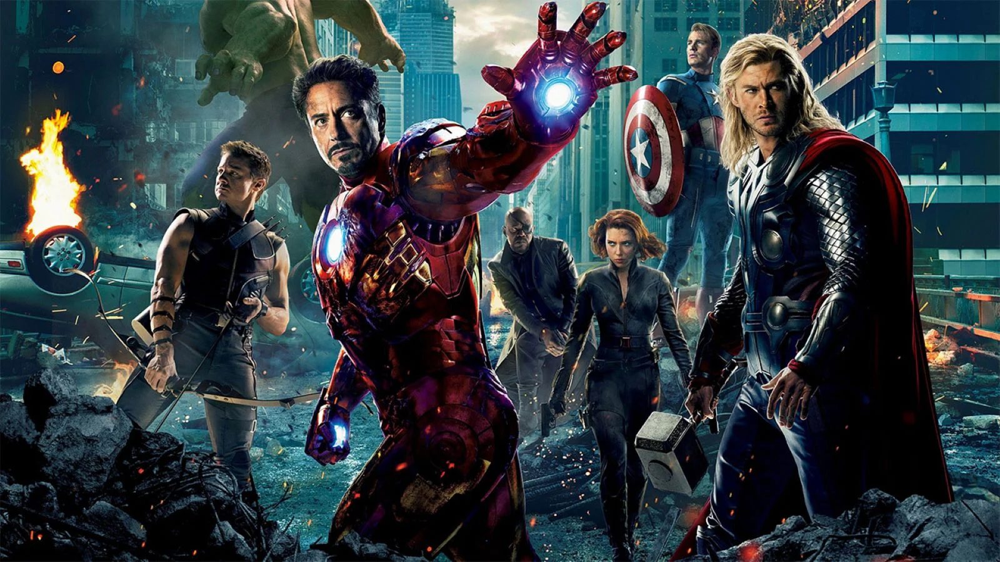
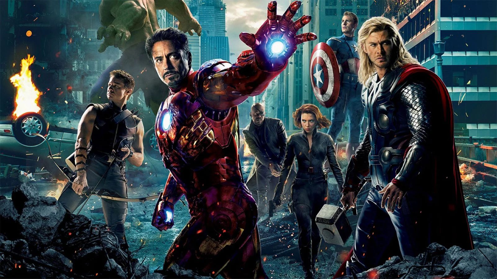

Basato sul gruppo di supereroi dei Vendicatori di Marvel Comics, il film è il seguito di Avengers: Infinity War (2018) e costituisce il 22º film del Marvel Cinematic Universe (MCU). Il film era stato annunciato nell'ottobre 2014 con il titolo di Avengers: Infinity War - Part 2. Nel luglio 2016 la Marvel ha cancellato il titolo precedente, mentre il titolo definitivo del film è stato reso noto il 7 dicembre 2018 con la pubblicazione del primo trailer. La pellicola comprende un cast corale che include molti degli attori comparsi nei precedenti film del MCU.
Il film ha ottenuto un grande successo di critica e pubblico, stabilendo numerosi record al botteghino, diventando anche il maggior incasso nella storia del cinema, superando Avatar, ma venendo nuovamente superato da quest'ultimo nel marzo 2021; è stato inoltre candidato a svariati premi cinematografici, tra i quali l'Oscar ai migliori effetti speciali.

trama
In seguito allo schiocco di dita di Thanos,Clint Barton vede scomparire tutta la sua famiglia. Ventidue giorni più tardi, Tony Stark e Nebula, che si trovano sull'astronave
dei Guardiani della Galassia, vengono salvati e portati al quartier generale degli Avengers da Captain Marvel. I tre si ricongiungono con Pepper Potts, Steve Rogers,
Natasha Romanoff, Bruce Banner, James Rhodes, Thor e Rocket. Il gruppo, speranzoso di utilizzare le Gemme per riportare tutti in vita, localizza Thanos, ma, una volta
raggiunto, quest'ultimo spiega di averle distrutte sfruttando il loro stesso potere, cosa che gli è quasi costata la vita. Appreso ciò, Thor, furioso, lo decapita.
Trascorrono cinque anni, durante i quali Ant-Man è rimasto imprigionato nel regno quantico,[N 2] ma casualmente riesce a sfuggirne. Per lui sono trascorse solo cinque ore
e, dopo aver ritrovato la figlia Cassie ormai cresciuta, va da Steve e Natasha, proponendo di sfruttare il regno quantico per viaggiare nel tempo. Pertanto,
i tre fanno visita a Tony Stark, ritiratosi a vita privata dopo essere diventato padre della piccola Morgan, chiedendogli aiuto. Stark però rifiuta, preso dai sensi di colpa per
aver perso Peter Parker, quindi il trio si rivolge a Bruce Banner, che nel frattempo ha trovato un modo per trasformarsi in Hulk mantenendo il cervello dello scienziato.
Banner accetta di aiutarli, ma i primi tentativi si rivelano fallimentari, finché non arriva Stark, che ha sviluppato un bracciale GPS che può aiutare a viaggiare nel regno
quantico. Tony riconsegna inoltre a Rogers lo scudo e i due si riappacificano. A questo punto il gruppo rintraccia Barton, che mosso dalla rabbia per la perdita della sua
famiglia è diventato uno spietato assassino di criminali, e Thor che, frustrato dal fallimento, si è ritirato ed è notevolmente ingrassato. Grazie al lavoro di Tony Stark
e Bruce Banner, la prima prova di viaggio nel tempo va a buon fine.
Il gruppo si divide: Stark, Rogers, Lang e Banner tornano nel 2012 a New York. Banner cerca la Gemma del tempo incontrando l'Antico che, inizialmente riluttante,
accetta di prestargliela, con Bruce che promette di riportarla nella loro realtà. Captain America riesce a recuperare la Gemma della mente, mentre Iron Man e Ant-Man
falliscono nel loro intento, causando anche la fuga di Loki e costringendo Stark e Rogers ad andare nel 1970 per recuperare il Tesseract oltre che nuove particelle Pym,
necessarie per continuare a viaggiare nel tempo, dalla base dello S.H.I.E.L.D. Thor e Rocket tornano nel 2013 ad Asgard per recuperare la Gemma della realtà da Jane Foster.
Qui Thor ha un breve dialogo con sua madre Frigga, recuperando nel mentre anche Mjolnir. Natasha, Clint, Nebula e Rhodes tornano nel 2014: i primi due si recano su Vormir
a prendere la Gemma dell'anima, ma Teschio Rosso li avverte che uno dei due dovrà sacrificarsi. I due si scontrano, in quanto ognuno dei due vuole immolarsi, ma alla fine èì
Natasha a morire, e Clint viene in possesso della Gemma. Nebula e Rhodes recuperano la Gemma del potere su Morag, ma vengono scoperti dalla Nebula di quell'epoca, ancora
fedele a Thanos, il quale riesce a vedere i ricordi della Nebula del futuro. Il Titano pianifica di plasmare un nuovo universo, consapevole solo di quello che ha ricevuto
e non di quello che ha perso. La Nebula del passato assume le sembianze della Nebula del futuro.
Tornati alla loro epoca con le Gemme dell'infinito, Banner indossa un nuovo Guanto e riporta tutti in vita, ferendosi gravemente. Tuttavia, la Nebula del passato fa
materializzare nel presente l'astronave di Thanos, che distrugge il quartier generale degli Avengers, portando inoltre con sé un enorme esercito. Thor, Iron Man e
Captain America, il quale riesce anche a brandire Mjolnir, affrontano Thanos. Barton trova il Guanto e cerca di portarlo più lontano possibile, venendo però ostacolato
dalla Nebula del passato: in suo aiuto giungono la versione passata di Gamora, ribellatasi a Thanos, e la Nebula del futuro, che elimina il suo doppio. Ant-Man riemerge
dalle macerie portando in salvo War Machine, Hulk e Rocket. Giungono sul campo di battaglia anche Spider-Man, le truppe del Wakanda con T'Challa, Shuri, Okoye e M'Baku,
gli stregoni del Kamar-Taj guidati da Wong e Strange, Bucky Barnes, Hope van Dyne, Wilson, Wanda, il resto dei Guardiani della Galassia, i Ravagers, Captain Marvel,
Pepper Potts con un'armatura creata per lei da Stark e gli Asgardiani guidati da Valchiria. Nonostante la superiorità di Thanos gli Avengers riescono a rallentarlo, e quando
il Titano riprende il Guanto, Captain Marvel gli impedisce di schioccare le dita. La battaglia sembra perdurare, quando Iron Man attacca Thanos, rubando le Gemme dal Guanto e
schioccando le dita per far dissolvere Thanos e il suo esercito. L'energia emessa dal guanto uccide Stark, che muore circondato da sua moglie e dai suoi compagni.
Dopo il funerale di Stark, Thor si unisce ai Guardiani della Galassia insieme a Nebula, lasciando a Valchiria il comando sugli Asgardiani; Captain America viene mandato
un'ultima volta indietro nel tempo per riportare le Gemme e Mjolnir alla loro epoca, ma non torna indietro. Appare invece sul posto un Rogers molto invecchiato che afferma
di essere felice per essersi riunito alla sua Peggy Carter nel passato. Poiché molto anziano, il Capitano dona il suo scudo a Falcon.
 
